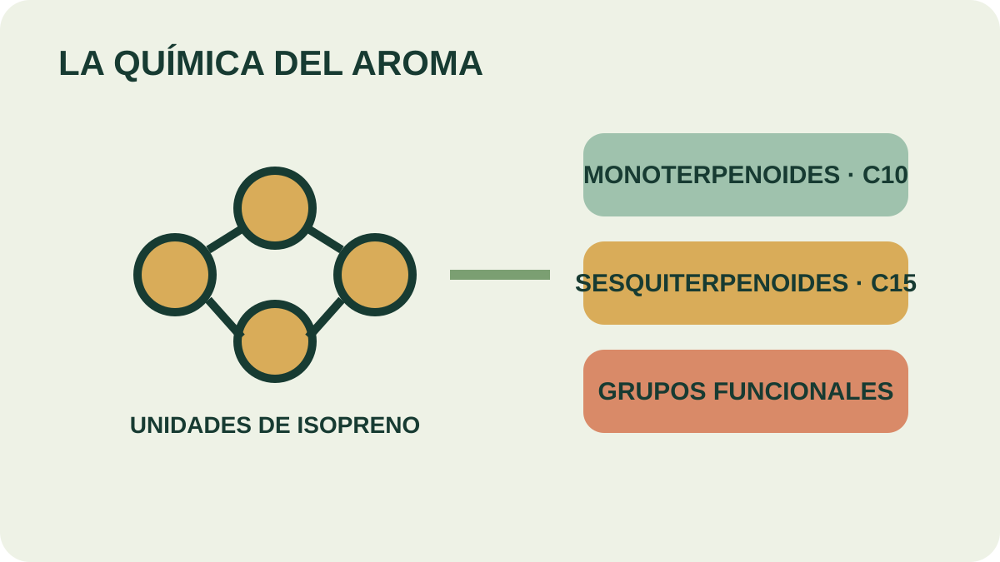

Módulo 20 · 25 minutos
La química del aroma en palabras simples
Al terminar, vas a poder describir de qué está hecho un aceite esencial y relacionar su composición con sus propiedades.
Dos frascos con historias opuestas
La gaulteria concentra entre 98 y 99 % de una sola sustancia. El jazmín reúne más de treinta. Ambos reciben el nombre de aceite esencial, pero su complejidad es muy diferente. Esa distancia ayuda a entender por qué cada aroma se comporta de una manera y por qué reconocer un aceite exige mirar más allá de su nombre.
Una unidad pequeña que se repite
El funciona como una pieza de construcción. Los aceites están formados principalmente por terpenoides volátiles: estructuras de diez carbonos, los monoterpenoides, o de quince carbonos, los sesquiterpenoides.
Un no explica por sí solo el olor. También importan los grupos funcionales presentes en la molécula. Aldehídos, cetonas y ésteres son algunos de los grupos asociados a las sustancias olorosas.
El permite ordenar una diversidad enorme. En un aceite pueden coexistir aldehídos, fenoles, óxidos, ésteres, cetonas, alcoholes y terpenos, además de compuestos todavía sin identificar.
Complejidad no significa desorden
La gaulteria está dominada por salicilato de metilo; la canela contiene más de 85 % de cinamaldehído. En el extremo más diverso, jazmín y manzanilla superan treinta compuestos. Una esencia puede parecer simple por su olor y ser químicamente compleja.
Algunos perfiles permiten reconocer familias. Peperina: mentol, neomentol, mentona, piperitona e isomentona. Orégano: carvacrol, timol, fenoles y pineno. Romero: pineno, canfeno, cineol y borneol. Albahaca: metilchavicol o estragol, cineol, eugenol, linalol y alcanfor. Manzanilla: azuleno, sesquiterpenos, furfural y alcohol sesquiterpénico.

Contá y compará
Seguí las unidades que forman un monoterpenoide y un sesquiterpenoide. ¿Qué cambia al pasar de diez a quince carbonos? Después buscá los grupos funcionales y explicá por qué dos moléculas de tamaño parecido pueden oler distinto.
Propiedades que vuelven al alambique
En conjunto, los aceites esenciales son líquidos a temperatura ambiente y rara vez tienen color. Su densidad suele ser inferior a la del agua, aunque sasafrás y clavo son excepciones. Casi siempre presentan poder rotatorio e índice de refracción elevado.
Son solubles en alcoholes y disolventes orgánicos habituales, y muy poco solubles en agua. Además pueden ser arrastrados por vapor de agua. Esta última propiedad explica el método principal de extracción visto en la Parte 4; la liposolubilidad explica por qué, para una preparación cutánea, se necesita un vehículo oleoso.
La composición conecta así producción y formulación. No es una lista ornamental: permite anticipar cómo se separa, dónde se disuelve y por qué cada aceite requiere identificación propia.
Actividad · Tres perfiles sin nombre
Asigná estas composiciones a orégano, romero y albahaca: A) carvacrol, timol, fenoles, pineno; B) pineno, canfeno, cineol, borneol; C) estragol, cineol, eugenol, linalol, alcanfor. Señalá en cada caso dos pistas que sostienen tu elección.
La composición deja una huella
Si cada aceite posee un perfil, ese perfil puede separarse y leerse. En la próxima estación, una mancha de tinta mostrará en papel la misma lógica que un laboratorio usa para comparar frascos.
Guardá esta estación
Cuando puedas explicar la idea central con tus propias palabras, marcá el módulo como completado.